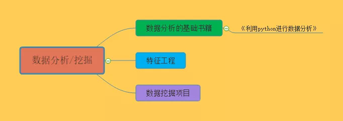
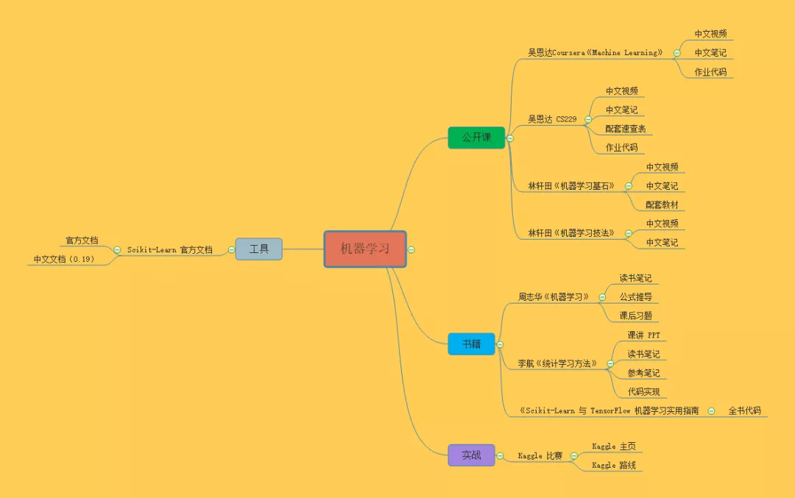
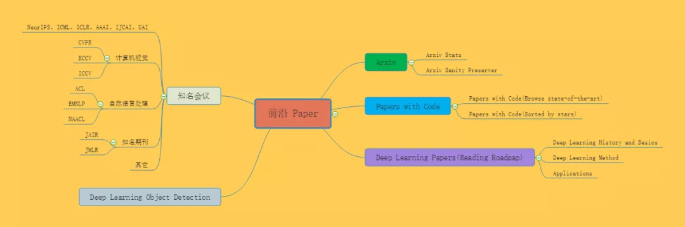
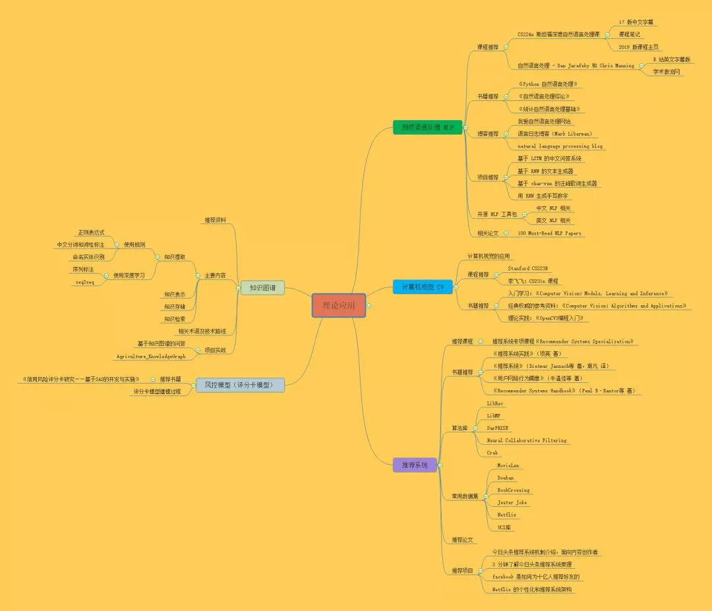

AI学习路线1
本文由知名开源平台，AI 技术平台以及领域专家：Datawhale，ApacheCN，AI 有道和黄海广博士联合整理贡献，内容涵盖 AI 入门基础知识、数据分析\挖掘、机器学习、深度学习、强化学习、前沿 Paper 和五大 AI 理论应用领域：自然语言处理，计算机视觉，推荐系统，风控模型和知识图谱。是你学习 AI 从入门到专家必备的学习路线和优质学习资源。
0. 参考资料¶
- 重磅 | 完备的 AI 学习路线，最详细的资源整理！
- AI 路线图 v0.2
- AI learning 资源
- apacheCN中文社区文档
- Kaggle 项目实战（教程） = 文档 + 代码 + 视频（欢迎参与）
- 机器学习算法全景图
 （来源AI 路线图 v0.2）
（来源AI 路线图 v0.2）
1. 基础知识¶

1.1 数学¶
数学是学不完的，也没有几个人能像博士一样扎实地学好数学基础，入门人工智能领域，其实只需要掌握必要的基础知识就好。AI的数学基础最主要是高等数学、线性代数、概率论与数理统计三门课程，这三门课程是本科必修的。这里整理了一个简易的数学入门文章：
-
数学基础：高等数学 https://zhuanlan.zhihu.com/p/36311622
-
数学基础：线性代数 https://zhuanlan.zhihu.com/p/36584206
-
数学基础：概率论与数理统计 https://zhuanlan.zhihu.com/p/36584335
机器学习的数学基础资料下载：
- 机器学习的数学基础.docx
中文版，对高等数学、线性代数、概率论与数理统计三门课的公式做了总结。
- 斯坦福大学机器学习的数学基础.pdf
原版英文材料，非常全面，建议英语好的同学直接学习这个材料。
- 下载链接: https://pan.baidu.com/s/1LaUlrJzy98CG1Wma9FgBtg 提取码: hktx
国外经典数学教材：
- 相比国内浙大版和同济版的数学教材更加通俗易懂，深入浅出，便于初学者更好地奠定数学基础。
- 下载链接： https://blog.csdn.net/Datawhale/article/details/81744961
1.2 统计学¶
-
入门教材：深入浅出统计学
-
进阶教材：商务与经济统计
-
推荐视频：可汗学院统计学
1.3 编程¶
入门人工智能领域，首推Python这门编程语言。
1) Python安装：¶
-
Python安装包，我推荐下载Anaconda，Anaconda是一个用于科学计算的Python发行版，支持 Linux, Mac, Windows系统，提供了包管理与环境管理的功能，可以很方便地解决多版本Python并存、切换以及各种第三方包安装问题。
下载地址： https://www.anaconda.com/download/ 推荐选Anaconda （python 3.7版本）
-
IDE：推荐使用pycharm，社区版免费
-
安装教程：
Anaconda+Jupyter notebook+Pycharm：
https://zhuanlan.zhihu.com/p/59027692
Ubuntu18.04深度学习环境配置(CUDA9+CUDNN7.4+TensorFlow1.8)：
https://zhuanlan.zhihu.com/p/50302396
2) python入门的资料推荐¶
-
a.廖雪峰python学习笔记
-
b.python入门笔记
作者李金，这个是jupyter notebook文件，把python的主要语法演示了一次，值得推荐。下载链接:
-
c.南京大学python视频教程
这个教程非常值得推荐，python主要语法和常用的库基本涵盖了。
查看地址：
https://www.icourse163.org/course/0809NJU004-1001571005?from=study
看完这三个资料后python基本达到入门水平，可以使用scikit-learn等机器学习库来解决机器学习的问题了。
3）补充¶
-
代码规范：
-
numpy练习题：
-
pandas练习题：
2. 数据分析/挖掘¶

2.1 数据分析的基础书籍¶
《利用python进行数据分析》 https://github.com/apachecn/pyda-2e-zh
这本书含有大量的实践案例，你将学会如何利用各种Python库（包括NumPy，Pandas、Matplotlib以及IPython等）高效地解决各式各样的数据分析问题。如果把代码都运行一次，基本上就能解决数据分析的大部分问题了。
2.2 特征工程¶
特征工程专题链接： https://blog.csdn.net/Datawhale/article/details/83033869
2.3 数据挖掘项目¶
https://blog.csdn.net/datawhale/article/details/80847662
3. 机器学习¶

3.1 公开课: 吴恩达《Machine Learning》¶
这绝对是机器学习入门的首选课程，没有之一！即便你没有扎实的机器学习所需的扎实的概率论、线性代数等数学基础，也能轻松上手这门机器学习入门课，并体会到机器学习的无穷趣味。
-
课程主页：
-
中文视频：
网易云课堂搬运了这门课，并由黄海广等人翻译了中文字幕。 https://study.163.com/course/introduction/1004570029.htm * 中文笔记及作业代码：
3.2 公开课: 吴恩达 CS229¶
吴恩达在斯坦福教授的机器学习课程 CS229 与 吴恩达在 Coursera 上的《Machine Learning》相似，但是有更多的数学要求和公式的推导，难度稍难一些。该课程对机器学习和统计模式识别进行了广泛的介绍。
-
课程主页：
-
中文视频：
-
中文笔记：
-
速查表：
这份给力的资源贡献者是一名斯坦福的毕业生 Shervine Amidi。作者整理了一份超级详细的关于 CS229的速查表
-
作业代码：
3.3 公开课: 林轩田《机器学习基石》¶
台湾大学林轩田老师的《机器学习基石》课程由浅入深、内容全面，基本涵盖了机器学习领域的很多方面。其作为机器学习的入门和进阶资料非常适合。而且林老师的教学风格也很幽默风趣，总让读者在轻松愉快的氛围中掌握知识。这门课比 Ng 的《Machine Learning》稍难一些，侧重于机器学习理论知识。
-
中文视频：
-
中文笔记：
https://redstonewill.com/category/ai-notes/lin-ml-foundations/ https://github.com/apachecn/ntu-hsuantienlin-ml（推荐）
-
配套教材
配套书籍为《Learning From Data》，在线书籍主页：http://amlbook.com/
3.4 公开课: 林轩田《机器学习技法》¶
《机器学习技法》课程是《机器学习基石》的进阶课程。主要介绍了机器学习领域经典的一些算法，包括支持向量机、决策树、随机森林、神经网络等等。难度要略高于《机器学习基石》，具有很强的实用性。
3.5 书籍:《机器学习》¶
周志华的《机器学习》被大家亲切地称为“西瓜书”。这本书非常经典，讲述了机器学习核心数学理论和算法，适合有作为学校的教材或者中阶读者自学使用，入门时学习这本书籍难度稍微偏高了一些。
1 | 配合《机器学习实战》一起学习，效果更好！ |
-
读书笔记：
-
公式推导：
-
课后习题：
3.6 书籍:《统计学习方法》¶
李航的这本《统计学习方法》堪称经典，包含更加完备和专业的机器学习理论知识，作为夯实理论非常不错。
-
讲课 PPT：
-
读书笔记：
-
参考笔记：
-
代码实现：
3.7 书籍《Scikit-Learn 与 TensorFlow 机器学习实用指南》¶
在经过前面的学习之后，这本《Scikit-Learn 与 TensorFlow 机器学习实用指南》非常适合提升你的机器学习实战编程能力。
这本书分为两大部分，第一部分介绍机器学习基础算法，每章都配备 Scikit-Learn 实操项目；第二部分介绍神经网络与深度学习，每章配备 TensorFlow 实操项目。如果只是机器学习，可先看第一部分的内容。
3.8 实战: Kaggle 比赛¶
比赛是提升自己机器学习实战能力的最有效的方式，首选 Kaggle 比赛。
-
Kaggle 主页:
-
Kaggle 路线:
3.9 工具: Scikit-Learn 官方文档¶
Scikit-Learn 作为机器学习一个非常全面的库，是一份不可多得的实战编程手册。
-
官方文档：
-
中文文档（0.19）：
4. 深度学习¶

4.1 公开课 : 吴恩达《Deep Learning》¶
在吴恩达开设了机器学习课程之后，发布的《Deep Learning》课程也备受好评，吴恩达老师的课程最大的特点就是将知识循序渐进的传授给你，是入门学习不可多得良好视频资料。
整个专题共包括五门课程：01.神经网络和深度学习；02.改善深层神经网络-超参数调试、正则化以及优化；03.结构化机器学习项目；04.卷积神经网络；05.序列模型。
-
课程视频
- 网易云课堂：
https://mooc.study.163.com/university/deeplearning_ai#/c
- Coursera:
-
课程笔记
之前编写过吴恩达老师机器学习个人笔记黄海广博士带领团队整理了中文笔记：
-
参考论文
吴恩达老师在课程中提到了很多优秀论文，黄海广博士整理如下：
https://github.com/fengdu78/deeplearning_ai_books/tree/master/%E5%8F%82%E8%80%83%E8%AE%BA%E6%96%87
-
课程PPT及课后作业
吴恩达深度学习课程，包含课程的课件、课后作业和一些其他资料：
4.2 公开课: Fast.ai《程序员深度学习实战》¶
说到深度学习的公开课，与吴恩达《Deep Learning》并驾齐驱的另一门公开课便是由Fast.ai出品的《程序员深度学习实战》。这门课最大的特点便是“自上而下”而不是“自下而上”,是绝佳的通过实战学习深度学习的课程。
-
视频地址
- B站地址(英文字幕)：
https://www.bilibili.com/video/av18904696?from=search&seid=10813837536595120136
- CSDN地址(2017版中文字幕):
-
课程笔记
- 英文笔记原文：
https://medium.com/@hiromi_suenaga/deep-learning-2-part-1-lesson-1-602f73869197
- 由ApacheCN组织的中文翻译：
4.3 公开课: CS230 Deep Learning¶
斯坦福的深度学习课程CS230在4月2日刚刚开课，对应的全套PPT也随之上线。从内容来看，今年的课程与去年的差别不大，涵盖了CNNs, RNNs, LSTM, Adam, Dropout, BatchNorm, Xavier/He initialization 等深度学习的基本模型，涉及医疗、自动驾驶、手语识别、音乐生成和自然语言处理等领域。
Datawhale整理了该门课程的详细介绍及参考资料:
4.4 书籍: 神经网络与深度学习 - 复旦邱锡鹏¶
本书是入门深度学习领域的极佳教材，主要介绍了神经网络与深度学习中的基础知识、主要模型（前馈网络、卷积网络、循环网络等）以及在计算机视觉、自然语言处理等领域的应用。
4.5 书籍: 《深度学习》¶
完成以上学习后，想要更加系统的建立深度学习的知识体系，阅读《深度学习》准没错。该书从浅入深介绍了基础数学知识、机器学习经验以及现阶段深度学习的理论和发展，它能帮助人工智能技术爱好者和从业人员在三位专家学者的思维带领下全方位了解深度学习。
-
书籍介绍
《深度学习》通常又被称为花书，深度学习领域最经典的畅销书。由全球知名的三位专家IanGoodfellow、YoshuaBengio和AaronCourville撰写，是深度学习领域奠基性的经典教材。该书被大众尊称为“AI圣经”。
-
在线阅读
该书由众多网友众包翻译，电子版在以下地址获得：
4.6 书籍: 《深度学习 500 问》¶
当你看完了所有的视频，研习了AI圣经，一定充满了满脑子问号，此时不如来深度学习面试中常见的500个问题。
-
书籍介绍
DeepLearning-500-questions，作者是川大的一名优秀毕业生谈继勇。该项目以深度学习面试问答形式，收集了 500 个问题和答案。内容涉及了常用的概率知识、线性代数、机器学习、深度学习、计算机视觉等热点问题，该书目前尚未完结，却已经收获了Github 2.4w stars。
-
项目地址：
4.7 工具: TensorFlow 官方文档¶
学深度学习一定离不开TensorFlow
-
官方文档：
-
中文文档：
4.8 工具: PyTorch官方文档¶
PyTorch是学深度学习的另一个主流框架
-
官方文档：
-
中文文档(版本0.3)：
5. 强化学习¶

5.1 公开课: Reinforcement Learning-David Silver¶
与吴恩达的课程对于机器学习和深度学习初学者的意义相同，David Silver的这门课程绝对是大多数人学习强化学习必选的课程。
课程从浅到深，把强化学习的内容娓娓道来，极其详尽。不过由于强化学习本身的难度，听讲这门课还是有一定的门槛，建议还是在大致了解这个领域之后观看该视频学习效果更佳，更容易找到学习的重点。
-
视频地址
- B站地址(中文字幕)：
https://www.bilibili.com/video/av45357759?from=search&seid=9547815852611563503
- 课程原地址：
-
课程PPT：
-
课程笔记：
5.2 公开课: 李宏毅《深度强化学习》¶
David Silver的课程虽然内容详尽，但前沿的很多内容都没有被包括在内，这时，台大李宏毅的《深度强化学习》就是学习前沿动态的不二之选。
-
视频地址
- B站地址(中文字幕)：
https://www.bilibili.com/video/av24724071?from=search&seid=9547815852611563503
- 课程原地址：
-
课程PPT：
-
课程笔记：
6. 前沿Paper¶

6.1 Arxiv: Arxiv Stats¶
-
Arxiv 机器学习最新论文检索主页地址：
-
Arxiv Sanity Preserver
Andrej Karpathy 开发了 Arxiv Sanity Preserver，帮助分类、搜索和过滤特征
主页地址：
6.2 Papers with Code: Papers with Code(Browse state-of-the-art)¶
这个网站叫做 Browse state-of-the-art。它将 ArXiv 上的最新深度学习论文与 GitHub 上的开源代码联系起来。该项目目前包含了 651 个排行榜，1016 个深度学习任务，795 个数据集，以及重磅的 10257 个含复现代码的优秀论文。简直就是一个寻找论文和代码的利器。它将 1016 个深度学习任务分成了 16 大类，涉及了深度学习的各个方面。
-
主页地址：
-
举两个例子：
- CV：
https://paperswithcode.com/area/computer-vision
- NLP：
-
Papers with Code(Sorted by stars)
这份资源收集了 AI 领域从 2013 - 2018 年所有的论文，并按照在 GitHub 上的标星数量进行排序。
GitHub 项目地址：
6.3 Deep Learning Papers 阅读路线¶
如果你是深度学习领域的新手，你可能会遇到的第一个问题是“我应该从哪篇论文开始阅读？”下面是一个深入学习论文的阅读路线图！
-
GitHub 项目地址：
https://github.com/floodsung/Deep-Learning-Papers-Reading-Roadmap
这份深度学习论文阅读路线分为三大块：
1 Deep Learning History and Basics
2 Deep Learning Method
3 Applications
4
6.4 Deep Learning Object Detection¶
目标检测（Object Detection）是深度学习 CV 领域的一个核心研究领域和重要分支。纵观 2013 年到 2019 年，从最早的R-CNN、Fast R-CNN 到后来的 YOLO v2、YOLO v3 再到今年的 M2Det，新模型层出不穷，性能也越来越好！
本资源对目标检测近几年的发展和相关论文做出一份系统介绍，总结一份超全的文献 paper 列表。

6.5: 知名会议¶
-
会议
- NeurIPS：https://nips.cc/
-
ICML：https://icml.cc/
-
ICLR：https://iclr.cc/
-
IJCAI：https://www.ijcai.org/
-
计算机视觉：
-
自然语言处理：
-
NAACL：https://naacl2019.org/
-
知名期刊:
-
JMLR：http://www.jmlr.org/
-
其它
-
机器人方面，有 CoRL（学习）、ICAPS（规划，包括但不限于机器人）、ICRA、IROS、RSS；
-
对于更理论性的研究，有 AISTATS、COLT、KDD。
-
7. 理论应用¶

7.1 自然语言处理¶
1
NLP是什么
自然语言处理（NLP，Natural Language Processing）是研究计算机处理人类语言的一门技术，目的是弥补人类交流（自然语言）和计算机理解（机器语言）之间的差距。NLP包含句法语义分析、信息抽取、文本挖掘、机器翻译、信息检索、问答系统和对话系统等领域。
2
课程推荐
CS224n 斯坦福深度自然语言处理课
17版中文字幕：
https://www.bilibili.com/video/av41393758/?p=1
课程笔记：
http://www.hankcs.com/?s=CS224n%E7%AC%94%E8%AE%B0
2019版课程主页：
http://web.stanford.edu/class/cs224n/
自然语言处理 - Dan Jurafsky 和 Chris Manning
B站英文字幕版：
https://www.bilibili.com/video/av35805262/
学术激流网：
http://academictorrents.com/details/d2c8f8f1651740520b7dfab23438d89bc8c0c0ab
3
书籍推荐
Python自然语言处理
入门读物，整本书不仅涉及了语料库的操作，也对传统的基于规则的方法有所涉及。全书包括了分词（tokenization）、词性标注（POS）、语块（Chunk）标注、句法剖析与语义剖析等方面，是nlp中不错的一本实用教程。
自然语言处理综论
By Daniel Jurafsky和James H. Martin
本书十分权威，是经典的NLP教科书，涵盖了经典自然语言处理、统计自然语言处理、语音识别和计算语言学等方面。
统计自然语言处理基础
By Chris Manning和HinrichSchütze
更高级的统计NLP方法，在统计基本部分和n元语法部分介绍得都很不错。
4
博客推荐
我爱自然语言处理
TFIDF、文档相似度等等在这个网站上都有通俗易懂的解释
语言日志博客（Mark Liberman）
地址：
http://languagelog.ldc.upenn.edu/nll/
natural language processing blog
地址：https://nlpers.blogspot.com/
美国Hal Daumé III维护的一个natural language processing的 博客，经常评论最新学术动态，值得关注。有关于ACL、NAACL等学术会议的参会感想和对论文的点评
5
项目推荐
基于LSTM的中文问答系统
https://github.com/S-H-Y-GitHub/QA
基于RNN的文本生成器
https://github.com/karpathy/char-rnn
基于char-rnn的汪峰歌词生成器
https://github.com/phunterlau/wangfeng-rnn
用RNN生成手写数字
https://github.com/skaae/lasagne-draw
6
开源NLP工具包
中文NLP相关：https://github.com/crownpku/Awesome-Chinese-NLP
英文NLP相关：
NLTK: http://www.nltk.org/
TextBlob: http://textblob.readthedocs.org/en/dev/
Gensim: http://radimrehurek.com/gensim/
Pattern: http://www.clips.ua.ac.be/pattern
Spacy: http://spacy.io
Orange: http://orange.biolab.si/features/
Pineapple: https://github.com/proycon/pynlpl
7
相关论文
100 Must-Read NLP Papers
https://github.com/mhagiwara/100-nlp-papers
7.2 计算机视觉¶
1
计算机视觉的应用 计算机视觉的应用 无人驾驶 无人安防 人脸识别 车辆车牌识别 以图搜图 VR/AR 3D重构 无人机 医学图像分析 其他
2
课程推荐
Stanford CS223B
比较适合基础，适合刚刚入门的同学，跟深度学习的结合相对来说会少一点，不会整门课讲深度学习，而是主要讲计算机视觉，方方面面都会讲到
李飞飞：CS231n课程：
https://mp.weixin.qq.com/s/-NaDpXsxvu4DpXqVNXIAvQ
3
书籍推荐
1.入门学习：
《Computer Vision：Models, Learning and Inference》
2.经典权威的参考资料：
《Computer Vision：Algorithms and Applications》
3.理论实践：
《OpenCV3编程入门》
7.3 推荐系统¶
1
推荐系统是什么
推荐系统就是自动联系用户和物品的一种工具，它能够在信息过载的环境中帮助用户发现令他们感兴趣的信息，也能将信息推送给对它们感兴趣的用户。推荐系统属于资讯过滤的一种应用。
2
推荐课程
推荐系统专项课程《Recommender Systems Specialization》
这个系列由4门子课程和1门毕业项目课程组成，包括推荐系统导论，最近邻协同过滤，推荐系统评价，矩阵分解和高级技术等。
观看地址：
https://www.coursera.org/specializations/recommender-systems
3
书籍推荐
《推荐系统实践》（项亮 著）
《推荐系统》（Dietmar Jannach等 著，蒋凡 译）
《用户网络行为画像》（牛温佳等 著）
《Recommender Systems Handbook》（Paul B·Kantor等 著）
4
算法库
LibRec
LibRec是一个Java版本的覆盖了70余个各类型推荐算法的推荐系统开源算法库，由国内的推荐系统大牛郭贵冰创办，目前已更新到2.0版本，它有效地解决了评分预测和物品推荐两大关键的推荐问题。
项目地址: https://github.com/guoguibing/librec
官网地址： https://www.librec.net/
LibMF
C++版本开源推荐系统，主要实现了基于矩阵分解的推荐系统。针对SGD（随即梯度下降）优化方法在并行计算中存在的 locking problem 和 memory discontinuity问题，提出了一种 矩阵分解的高效算法FPSGD（Fast Parallel SGD），根据计算节点的个数来划分评分矩阵block，并分配计算节点。
项目地址：
http://www.csie.ntu.edu.tw/~cjlin/libmf/
SurPRISE
一个Python版本的开源推荐系统，有多种经典推荐算法
Neural Collaborative Filtering
神经协同过滤推荐算法的Python实现
项目地址：
https://github.com/hexiangnan/neural_collaborative_filtering
Crab
基于Python开发的开源推荐软件，其中实现有item和user的协同过滤
项目地址：http://muricoca.github.io/crab/
5
常用数据集
MovieLen
https://grouplens.org/datasets/movielens/
MovieLens数据集中，用户对自己看过的电影进行评分，分值为1~5。MovieLens包括两个不同大小的库，适用于不同规模的算法。小规模的库是943个独立用户对1 682部电影作的10 000次评分的数据；大规模的库是6 040个独立用户对3 900部电影作的大约100万次评分。适用于传统的推荐任务
Douban
https://www.cse.cuhk.edu.hk/irwin.king.new/pub/data/douban
Douban是豆瓣的匿名数据集，它包含了12万用户和5万条电影数据，是用户对电影的评分信息和用户间的社交信息，适用于社会化推荐任务。
BookCrossing
http://www2.informatik.uni-freiburg.de/~cziegler/BX/
这个数据集是网上的Book-Crossing图书社区的278858个用户对271379本书进行的评分，包括显式和隐式的评分。这些用户的年龄等人口统计学属性(demographic feature)都以匿名的形式保存并供分析。这个数据集是由Cai-Nicolas Ziegler使用爬虫程序在2004年从Book-Crossing图书社区上采集的。
6
推荐论文
经典必读论文整理，包括综述文章、传统经典推荐文章、社会化推荐文章、基于深度学习的推荐系统文章、专门用于解决冷启动的文章、POI相关的论文、利用哈希技术来加速推荐的文章以及推荐系统中经典的探索与利用问题的相关文章等。
项目地址:
https://github.com/hongleizhang/RSPapers
7
推荐项目
1.今日头条推荐系统机制介绍，面向内容创作者。分享人：项亮，今日头条推荐算法架构师:
https://v.qq.com/x/page/f0800qavik7.html?
- 3分钟了解今日头条推荐系统原理
https://v.qq.com/x/page/g05349lb80j.html?
3.facebook是如何为十亿人推荐好友的
https://code.facebook.com/posts/861999383875667/recommending-items-to-more-than-a-billion-people/
4.Netflix的个性化和推荐系统架构
http://techblog.netflix.com/2013/03/system-architectures-for.html
7.4 风控模型（评分卡模型）¶
1
评分卡模型简介
评分卡模型时在银行、互金等公司与借贷相关业务中最常见也是最重要的模型之一。简而言之它的作用就是对客户进行打分，来对客户是否优质进行评判。
根据评分卡模型应用的业务阶段不用，评分卡模型主要分为三大类：A卡（Application score card）申请评分卡、B卡（Behavior score card）行为评分卡、C卡（Collection score card）催收评分卡。其中申请评分卡用于贷前，行为评分卡用于贷中，催收评分卡用于贷后，这三种评分卡在我们的信贷业务的整个生命周期都至关重要。
2
推荐书籍
《信用风险评分卡研究——基于SAS的开发与实施》
3
评分卡模型建模过程
样本选取
确定训练样本、测试样本的观察窗（特征的时间跨度）与表现窗（标签的时间跨度），且样本的标签定义是什么？一般情况下风险评分卡的标签都是考虑客户某一段时间内的延滞情况。
特征准备
原始特征、衍生变量
数据清洗
根据业务需求对缺失值或异常值等进行处理
特征筛选
根据特征的IV值（特征对模型的贡献度）、PSI（特征的稳定性）来进行特征筛选，IV值越大越好（但是一个特征的IV值超过一定阈值可能要考虑是否用到未来数据），PSI越小越好（一般建模时取特征的PSI小于等于0.01）
对特征进行WOE转换
即对特征进行分箱操作，注意在进行WOE转换时要注重特征的可解释性
建立模型
在建立模型过程中可根据模型和变量的统计量判断模型中包含和不包含每个变量时的模型质量来进行变量的二次筛选。
评分指标
评分卡模型一般关注的指标是KS值（衡量的是好坏样本累计分部之间的差值）、模型的PSI(即模型整体的稳定性）、AUC值等。
7.5 知识图谱¶
1
知识图谱是什么
知识图谱是一种结构化数据的处理方法，它涉及知识的提取、表示、存储、检索等一系列技术。从渊源上讲，它是知识表示与推理、数据库、信息检索、自然语言处理等多种技术发展的融合。
2
推荐资料
为什么需要知识图谱？什么是知识图谱？——KG的前世今生
https://zhuanlan.zhihu.com/p/31726910
什么是知识图谱？
https://zhuanlan.zhihu.com/p/34393554
智能搜索时代：知识图谱有何价值？
https://zhuanlan.zhihu.com/p/35982177?from=1084395010&wm=9848_0009&weiboauthoruid=5249689143
百度王海峰：知识图谱是 AI 的基石
译文|从知识抽取到RDF知识图谱可视化
3
主要内容
3.1 知识提取
构建kg首先需要解决的是数据，知识提取是要解决结构化数据生成的问题。我们可以用自然语言处理的方法，也可以利用规则。
3.1.1 使用规则
正则表达式
正则表达式（Regular Expression， regex）是字符串处 理的基本功。数据爬取、数据清洗、实体提取、关系提取，都离不开regex。
推荐资料入门：
精通正则表达式
regexper 可视化：例 [a-z]*(\d{4}(\D+))
pythex 在线测试正则表达式：
推荐资料进阶：
re2 ：
Python wrapper for Google's RE2 using Cython
https://pypi.python.org/pypi/re2/
Parsley ：更人性化的正则表达语法
http://parsley.readthedocs.io/en/latest/tutorial.html
中文分词和词性标注
分词也是后续所有处理的基础，词性（Part of Speech, POS）就是中学大家学过的动词、名词、形容词等等的词的分类。一般的分词工具都会有词性标注的选项。
推荐资料入门：
jieba 中文分词包
https://github.com/fxsjy/jieba
中文词性标记集
https://github.com/memect/kg-beijing/wiki/
推荐资料进阶：
genius 采用 CRF条件随机场算法
https://github.com/duanhongyi/genius
Stanford CoreNLP分词
https://blog.csdn.net/guolindonggld/article/details/72795022
命名实体识别
命名实体识别（NER）是信息提取应用领域的重要基础工具，一般来说，命名实体识别的任务就是识别出待处理文本中三大类（实体类、时间类和数字类）、七小类（人名、机构名、地名、时间、日期、货币和百分比）命名实体。
推荐资料：
Stanford CoreNLP 进行中文命名实体识别
https://blog.csdn.net/guolindonggld/article/details/72795022
3.1.2 使用深度学习
使用自然语言处理的方法，一般是给定schema，从非结构化数据中抽取特定领域的三元组（spo），如最近百度举办的比赛就是使用DL模型进行信息抽取。
序列标注
使用序列生出模型，主要是标记出三元组中subject及object的起始位置，从而抽取信息。
推荐资料：
序列标注问题
https://www.cnblogs.com/jiangxinyang/p/9368482.html
seq2seq
使用seq2seq端到端的模型，主要借鉴文本摘要的思想，将三元组看成是非结构化文本的摘要，从而进行抽取，其中还涉及Attention机制。
推荐资料：
seq2seq详解
https://blog.csdn.net/irving_zhang/article/details/78889364
详解从Seq2Seq模型到Attention模型
https://caicai.science/2018/10/06/attention%E6%80%BB%E8%A7%88/
3.2 知识表示
知识表示（Knowledge Representation，KR，也译为知识表现）是研究如何将结构化数据组织，以便于机器处理和人的理解的方法。
需要熟悉下面内容：
JSON和YAML
json库：
https://docs.python.org/2/library/json.html
PyYAML: 是Python里的Yaml处理库
RDF和OWL语义：
JSON-LD
3.3 知识存储
需要熟悉常见的图数据库
a.知识链接的方式：字符串、外键、URI
b.PostgreSQL及其JSON扩展
Psycopg包操作PostgreSQL
http://initd.org/psycopg/docs/
c.图数据库 Neo4j和OrientDB
1.Neo4j的Python接口 https://neo4j.com/developer/python/
2.OrientDB：http://orientdb.com/orientdb/
d.RDF数据库Stardog
Stardog官网：http://stardog.com/
3.4 知识检索
需要熟悉常见的检索技术
ElasticSearch教程：
http://joelabrahamsson.com/elasticsearch-101/
4
相关术语及技术路线
本体：
https://www.zhihu.com/question/19558514
RDF：
Apache Jena：
D2RQ：
http://d2rq.org/getting-started
4.1 Protege构建本体系列
protege：
protege使用：
https://zhuanlan.zhihu.com/p/32389370
4.2 开发语言
python或java
4.3 图数据库技术
Neo4j：https://neo4j.com/
AllegroGraph：https://franz.com/agraph/allegrograph/
4.4 可视化技术
d3.js：https://d3js.org/
Cytoscape.js：http://js.cytoscape.org/
4.5 分词技术
jieba：https://github.com/fxsjy/jieba
hanlp：https://github.com/hankcs/HanLP
5
项目实战
基于知识图谱的问答：
https://github.com/kangzhun/KnowledgeGraph-QA-Service
Agriculture_KnowledgeGraph：
https://github.com/qq547276542/Agriculture_KnowledgeGraph
8. 贡献平台¶
由知名开源平台，AI技术平台以及领域专家：ApacheCN，Datawhale，AI有道和黄海广博士联合整理贡献：
1.ApacheCN：片刻，李翔宇，飞龙，王翔
2.Datawhale：范晶晶，马晶敏，李碧涵，李福，光城，居居，康兵兵，郑家豪
3.AI有道：红色石头
4.黄海广博士